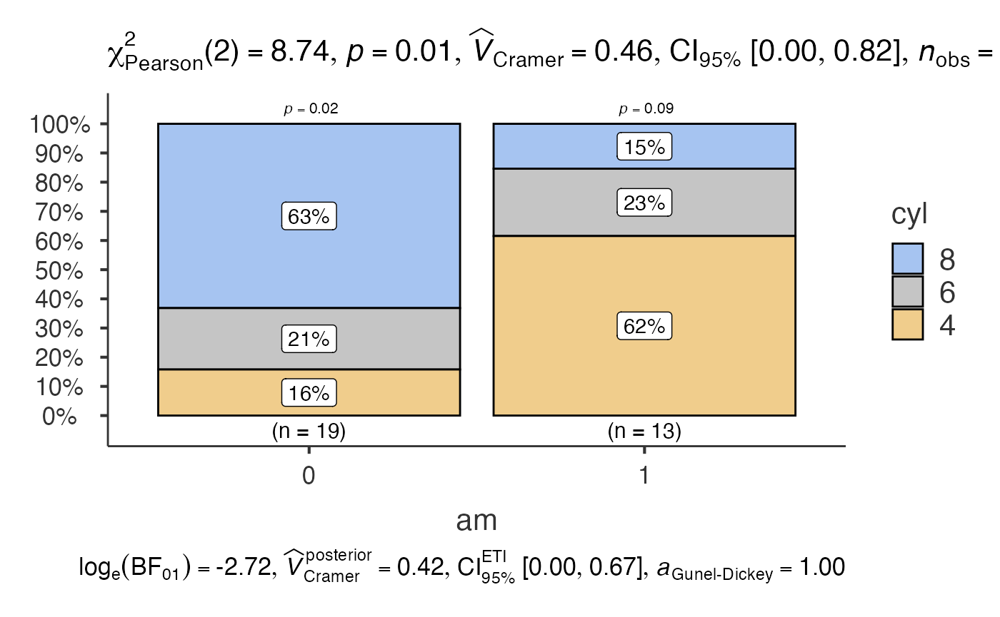
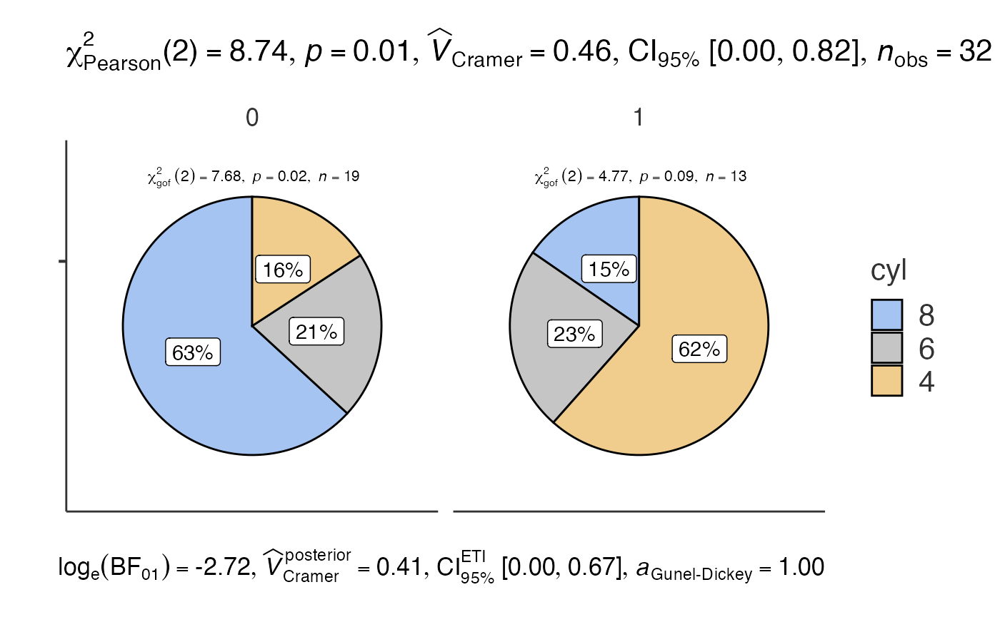
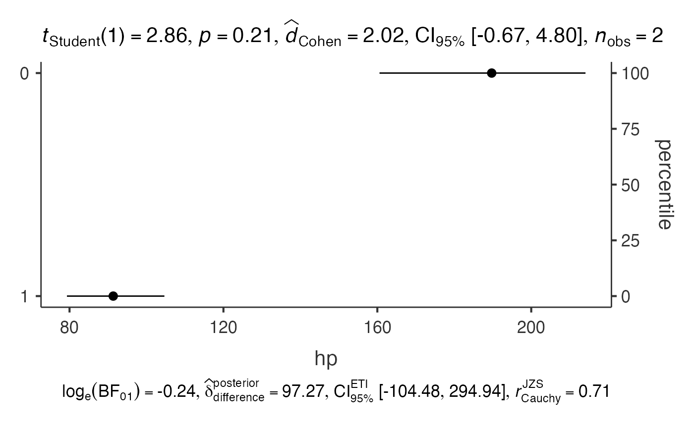

This vignette demonstrates the functions designed for categorical
data: jjbarstats(), jjpiestats() and
jjdotplotstats().
Bar charts with jjbarstats()
jjbarstats() creates a bar chart and automatically
performs a chi-squared test to compare the distribution of two
categorical variables. The example below compares the number of
cylinders (cyl) across transmission types
(am).
jjbarstats(data = mtcars, dep = cyl, group = am, grvar = NULL)
#>
#> BAR CHARTS
#>
#> You have selected to use a barplot to compare a categorical variable
#> with another.
Pie charts with jjpiestats()
jjpiestats() is similar to jjbarstats() but
displays the results as a pie chart.
jjpiestats(data = mtcars, dep = cyl, group = am, grvar = NULL)
#>
#> PIE CHARTS
#>
#> You have selected to use Pie Charts.
Dot charts with jjdotplotstats()
jjdotplotstats() shows group means using a dot plot. In
this example we plot horsepower (hp) by engine
configuration (vs).
jjdotplotstats(data = mtcars, dep = hp, group = vs, grvar = NULL)
#>
#> DOT CHART
#>
#> You have selected to use a Dot Plot to compare continuous variables by
#> groups.
Each function returns a results object whose plot
element contains the ggplot2 visualisation.